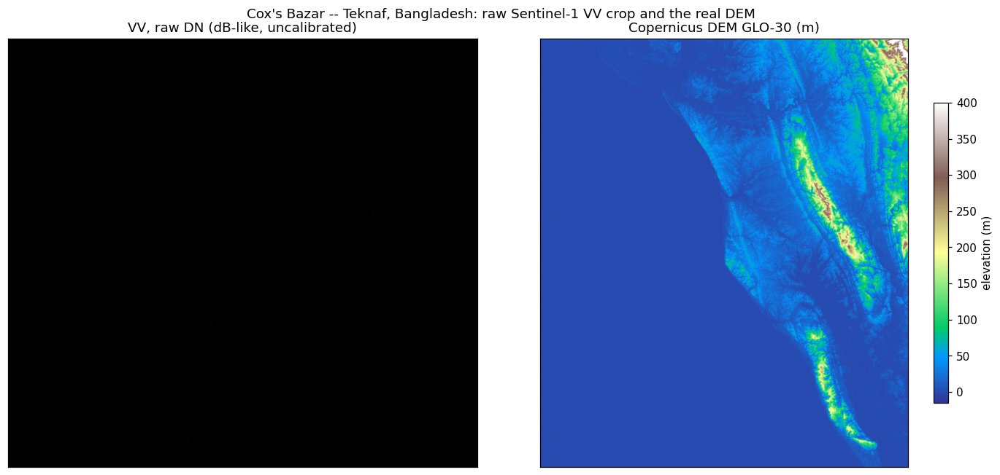
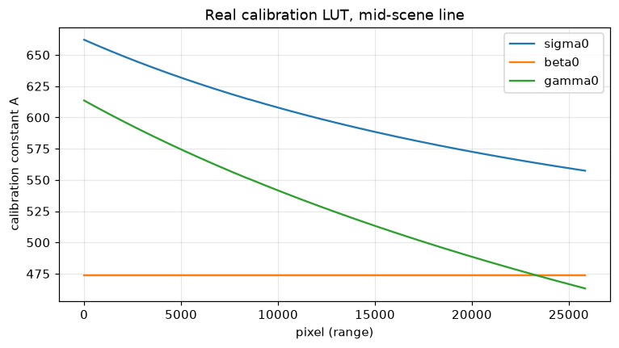
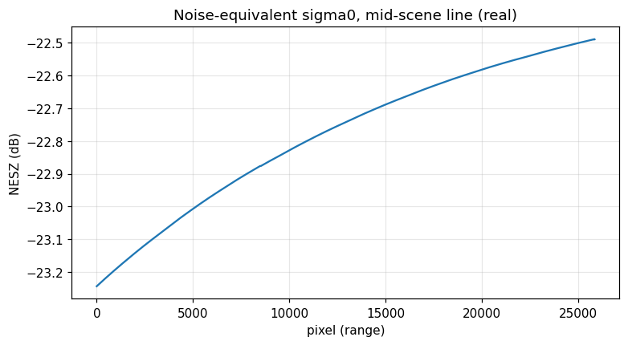
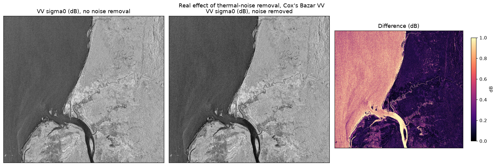
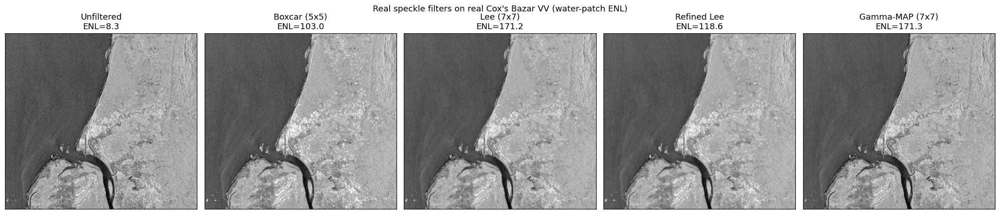
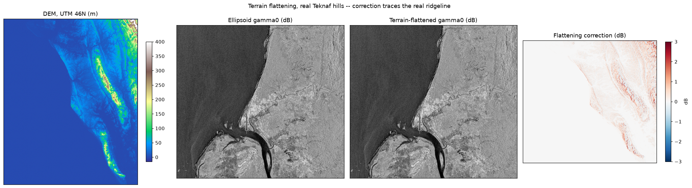
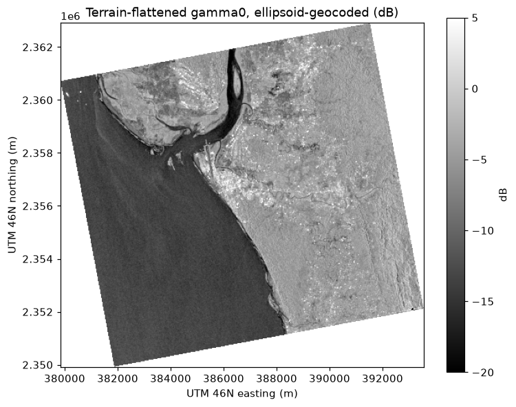
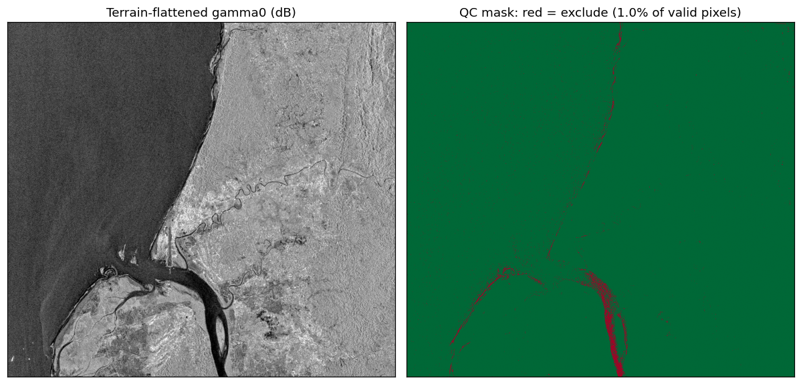

Zia U. Ahmed · Upatta Analytics LLC · uses GeoLattice’s geolattice.rsense remote sensing subpackage*
A Sentinel-1 Ground Range Detected (GRD) product stores raw digital numbers in radar geometry. Turning it into comparable, map-ready backscatter takes several steps: thermal-noise removal, radiometric calibration, multilooking, speckle filtering, radiometric terrain flattening and terrain correction (geocoding), then a decibel conversion and a quality-control pass. This notebook runs every one of those steps on a real Sentinel-1A GRD scene over the Cox’s Bazar – Teknaf coast of Bangladesh (13 January 2024), using a real Copernicus DEM for the terrain steps, and reports the real numbers that come out: a measured noise floor, a measured speckle-filter ENL, and a terrain-flattening correction that traces the real hill ridges on the ground, not a synthetic stand-in for them.
Cox’s Bazar is a deliberate choice of AOI: the Bay of Bengal gives a large, genuinely flat, genuinely calm-water target for the noise-floor and speckle sections; the town, beach and river mouth give mixed land cover; and the Teknaf peninsula’s hills (up to about 400 m, real relief inside an otherwise near-sea-level delta) give terrain flattening something real to correct, directly testing the Rmd workflow’s own claim that flattening “changes little” on a flat plain but is “essential” where there is real topography.
Core concepts
Learning objectives
Run thermal-noise removal, radiometric calibration, multilooking, speckle filtering, terrain flattening and geocoding on the Sentinel-1A IW GRDH scene of 13 January 2024 over Cox’s Bazar and Teknaf.
Calibrate digital numbers to sigma0, beta0 and gamma0 with the scene’s calibration and noise look-up tables, passing the crop offset to interpolate_lut.
Measure the noise floor over the Bay of Bengal and the equivalent number of looks after a 3x3 multilook.
Compare boxcar, Lee, Refined Lee and Gamma-MAP filters on the multilooked VV image, using ENL on open water.
Flatten beta0 to gamma0 with terrain_flatten and the Copernicus DEM GLO-30, and read the correction on the coastal plain and on the Teknaf hills.
Geocode with process_grd(backend="native") from the product ground control points, and state which full-product annotation process_grd(backend="sarsen") needs for range-Doppler terrain correction.
Convert linear backscatter to decibels with to_db for display, and mask layover, shadow, the measured noise floor and image edges.
Contents
Setup
Study area and real data
The GRD processing chain
Calibration and noise look-up tables
Geolocation, incidence angle and platform heading
Thermal-noise removal and radiometric calibration
Multilooking
Speckle filtering
Radiometric terrain flattening
Terrain correction (geocoding)
Convert to dB
Quality control
Processing back-ends
Bonus: analysis-ready alternatives, same AOI
Summary and exercises
Setup
Installation. This notebook needs installation option 5 (core, spatial analysis, spatial statistics, geostatistics and remote sensing): pip install "geolattice[remote-sensing]". See “Installation options” in the GeoLattice README.
Code
import warnings # control warning messageswarnings.filterwarnings("ignore") # hide library warningsfrom pathlib import Path # file pathsimport numpy as np # arraysimport pandas as pd # tablesimport rasterio # raster reading and writingimport rasterio.warp as warp # reprojectionfrom rasterio.windows import Window # read a pixel window of a large file# affine transform from ground control points; map coordinate -> (row, col)from rasterio.transform import from_gcps, rowcolimport matplotlib.pyplot as plt # figuresfrom scipy.ndimage import zoom # resample arrays by interpolationimport geolattice.rsense as rs # GeoLattice remote sensingfrom geolattice.rsense.sar import sentinel1 as s1 # Sentinel-1 calibration, noise, multilook and geometry toolsfrom geolattice.rsense.sar import speckle # speckle filters and ENL estimationplt.rcParams.update({"figure.dpi": 110}) # figure resolutionRUN_ONLINE =False# set to True to run the online download example at the endprint("geolattice.rsense", rs.__version__) # GeoLattice version
geolattice.rsense 0.3.49
Study area and real data
Scene:S1A_IW_GRDH_1SDV_20240113T115602_20240113T115627_052088_064BA4 – Sentinel-1A, IW mode, GRDH, VV+VH, ascending, 13 January 2024, 11:56 UTC (dry season). Downloaded from Microsoft Planetary Computer’s sentinel-1-grd collection, which republishes the real ESA measurement GeoTIFFs plus real per-swath calibration and noise look-up tables as a STAC item – the same files a direct ESA/Copernicus download would give for those three pieces. Each polarization’s measurement file is close to 600 MB, so this cell downloads once and caches the result under data/.
AOI: Cox’s Bazar – Teknaf, Bangladesh, (91.85, 21.30, 92.15, 21.55). The Bay of Bengal (open water), the Cox’s Bazar peninsula and Bakkhali river mouth (urban, agriculture, tidal flats) and the Teknaf peninsula’s hills (real relief up to about 400 m) all fall inside one small crop of the scene, read directly from the downloaded GeoTIFF with a rasterio windowed read rather than loading the full roughly 26,000 x 16,700 pixel swath.
DEM: Copernicus DEM GLO-30 (30 m), mosaicked from the three tiles covering the AOI and clipped with a small margin, from Planetary Computer’s cop-dem-glo-30 collection.
Code
DATA = Path("../../../../Data/08_remote_sensing/08_03_radar") # data folder# the unzipped Sentinel-1A GRD product (SAFE folder)SAFE_DIR = DATA /"S1A_IW_GRDH_1SDV_20240113T115602_20240113T115627_052088_064BA4.SAFE"# common part of the file names inside the SAFE folderSTEM ="20240113t115602-20240113t115627-052088-064ba4-001"# VV measurement GeoTIFF (raw digital numbers)VV_PATH = SAFE_DIR /"measurement"/f"s1a-iw-grd-vv-{STEM}.tiff"VH_PATH = SAFE_DIR /"measurement"/f"s1a-iw-grd-vh-{STEM}.tiff"# VH measurement GeoTIFF# VV calibration look-up table (XML)CAL_VV = SAFE_DIR /"annotation"/"calibration"/f"calibration-s1a-iw-grd-vv-{STEM}.xml"# VH calibration look-up tableCAL_VH = SAFE_DIR /"annotation"/"calibration"/f"calibration-s1a-iw-grd-vh-{STEM}.xml"# VV thermal-noise look-up table (XML)NOISE_VV = SAFE_DIR /"annotation"/"calibration"/f"noise-s1a-iw-grd-vv-{STEM}.xml"# VH thermal-noise look-up tableNOISE_VH = SAFE_DIR /"annotation"/"calibration"/f"noise-s1a-iw-grd-vh-{STEM}.xml"DEM_PATH = DATA /"cop_dem_glo30"/"coxsbazar_dem.tif"# Copernicus 30 m DEM clipped to the AOIAOI = (91.85, 21.30, 92.15, 21.55) # Cox's Bazar -- Teknaf, Bangladeshifnot VV_PATH.exists(): # download only if the scene is not on disk yet# Real Sentinel-1A GRD scene and real Copernicus DEM tiles from Planetary Computer.# ~600 MB per polarization -- only runs once, cached under ../../../../Data/08_remote_sensing/08_03_radar/ after that.import pystac_client # STAC search clientimport planetary_computer as pc # signs Planetary Computer URLs so they can be downloadedimport requests # HTTP downloads# open the Planetary Computer STAC catalogue catalog = pystac_client.Client.open("https://planetarycomputer.microsoft.com/api/stac/v1", modifier=pc.sign_inplace) item = catalog.get_collection("sentinel-1-grd").get_item( # the GRD item of 13 January 2024"S1A_IW_GRDH_1SDV_20240113T115602_20240113T115627_052088_064BA4")def fetch(href, dest): # stream a file to disk in 1 MB chunks dest.parent.mkdir(parents=True, exist_ok=True) # create the folderwith requests.get(href, timeout=600, stream=True) as r: # open the URL as a stream r.raise_for_status() # stop on an HTTP errorwithopen(dest, "wb") as f: # write the file chunk by chunkfor chunk in r.iter_content(chunk_size=1<<20): # 1 MB chunks f.write(chunk) # append the chunk# asset name in the STAC item -> local destination ASSETS = {"vv": VV_PATH, "vh": VH_PATH, "schema-calibration-vv": CAL_VV,"schema-calibration-vh": CAL_VH, "schema-noise-vv": NOISE_VV,"schema-noise-vh": NOISE_VH}for key, dest in ASSETS.items(): # download every assetprint("downloading", key, "->", dest.name) # progress message fetch(item.assets[key].href, dest) # download the asset# Copernicus DEM tiles that touch the AOI dem_search = catalog.search(collections=["cop-dem-glo-30"], bbox=AOI) DEM_PATH.parent.mkdir(parents=True, exist_ok=True) # DEM folderfrom rasterio.merge import merge # mosaic several rasters into one tiles = [] # the opened DEM tilesfor dem_item in dem_search.items(): # download each tile and open it tmp = DEM_PATH.parent /f"{dem_item.id}.tif"# temporary file for this tile fetch(dem_item.assets["data"].href, tmp) # download the tile tiles.append(rasterio.open(tmp)) # open it mosaic, mtransform = merge(tiles) # merge the tiles into one array and its transform# pixel window of the AOI inside the mosaic win = rasterio.windows.from_bounds(*AOI, transform=mtransform).round_lengths().round_offsets() profile = tiles[0].profile.copy() # copy the GeoTIFF profile of the first tile ...# ... and set the size and transform of the AOI window profile.update(height=int(win.height), width=int(win.width), transform=rasterio.windows.transform(win, mtransform))with rasterio.open(DEM_PATH, "w", **profile) as dst: # write the clipped DEM dst.write(mosaic[0][int(win.row_off):int(win.row_off + win.height), # write the AOI part of the mosaicint(win.col_off):int(win.col_off + win.width)], 1)for t in tiles: # close the tile files t.close() # close itprint("Done.") # finishedelse:print("Reusing the files already downloaded under", DATA) # files are already on disk
Reusing the files already downloaded under ../../../../Data/08_remote_sensing/08_03_radar
Code
# Window a Cox's Bazar crop directly out of the full measurement GeoTIFF: a GCP-fitted# affine (rasterio.transform.from_gcps) is accurate enough over a crop this size to turn the# AOI's lon/lat corners into an approximate (row, col) box, without warping or downloading the# whole ~26,000 x 16,700 pixel scene.with rasterio.open(VV_PATH) as src: # open the VV measurement file gcps, gcp_crs = src.gcps # its ground control points (GCPs) and their CRS# fit one affine transform to all GCPs (approximate, good enough to find the crop) approx_affine = from_gcps(gcps)# the four corners of the AOI (lon, lat) corners = [(AOI[0], AOI[1]), (AOI[2], AOI[1]), (AOI[0], AOI[3]), (AOI[2], AOI[3])] rcs = [rowcol(approx_affine, lon, lat) for lon, lat in corners] # (row, col) of each corner rows, cols = [r for r, c in rcs], [c for r, c in rcs] # rows and columns of the corners row0, row1 =max(0, min(rows)), min(src.height, max(rows)) # row range, clipped to the image col0, col1 =max(0, min(cols)), min(src.width, max(cols)) # column range, clipped to the image WINDOW = Window(col0, row0, col1 - col0, row1 - row0) # the crop as a rasterio Window dn_vv = src.read(1, window=WINDOW) # read only the VV pixels inside the windowwith rasterio.open(VH_PATH) as src: # the same window from the VH file dn_vh = src.read(1, window=WINDOW) # VH digital numbersSHAPE = dn_vv.shape # rows and columns of the cropOFFSET = (row0, col0) # this crop's (row, col) origin in the scene's own line/pixel numbering# crop size, offset and DN rangeprint(f"Crop: {SHAPE[0]} x {SHAPE[1]} pixels, offset {OFFSET}, DN range {dn_vv.min()}-{dn_vv.max()}")
Crop: 3243 x 3542 pixels, offset (np.int32(7506), np.int32(1682)), DN range 9-15098
Code
fig, axes = plt.subplots(1, 2, figsize=(13, 6)) # two panels# a quick dB-like view of the raw DN (DN² in dB, floored at 1)vv_db_preview =10* np.log10(np.maximum(dn_vv.astype("float64") **2, 1.0))axes[0].imshow(vv_db_preview, cmap="gray", vmin=60, vmax=120) # show it# title, no ticksaxes[0].set_title("VV, raw DN (dB-like, uncalibrated)"); axes[0].set_xticks([]); axes[0].set_yticks([])with rasterio.open(DEM_PATH) as dsrc: # open the DEM dem_preview = dsrc.read(1) # its elevationsim = axes[1].imshow(dem_preview, cmap="terrain", vmin=-15, vmax=400) # elevation map# title, no ticksaxes[1].set_title("Copernicus DEM GLO-30 (m)"); axes[1].set_xticks([]); axes[1].set_yticks([])plt.colorbar(im, ax=axes[1], shrink=0.7, label="elevation (m)") # colour barplt.suptitle("Cox's Bazar -- Teknaf, Bangladesh: raw Sentinel-1 VV crop and the real DEM") # overall titleplt.tight_layout() # arrangeplt.show() # draw

The GRD processing chain
Step
What it does
Why
geolattice.rsense.sar.sentinel1
1
Download
Real GRD measurement + calibration + noise
– (the Study area and real data section)
2
Thermal-noise removal
Subtract the instrument noise floor (NESZ); matters most for dark targets – calm water, cross-pol over bare soil
read_noise_lut, calibrate(..., noise_lut=...)
3
Radiometric calibration
DN to physically meaningful backscatter: sigma0, beta0 or gamma0
read_calibration_lut, interpolate_lut, calibrate
4
Multilooking (optional)
Average pixels in range/azimuth toward square ground pixels; trades resolution for lower speckle
multilook
5
Speckle filtering
Reduce the multiplicative speckle inherent to coherent imaging
Step 1 of a from-scratch chain also applies a precise orbit file before anything else, for accurate geolocation; geolattice.rsense.sar.sentinel1.read_orbit_file/interpolate_orbit parse one, though the ellipsoid/GCP geocoding this notebook uses for Step 7 does not need it (the GRD product’s own embedded GCPs already carry ESA’s own geolocation). A from-scratch range-Doppler terrain correction (the sarsen backend, the Terrain correction (geocoding) section) does use it, bundled inside the product’s full annotation.
Calibration and noise look-up tables
The annotation folder of every real GRD carries calibration-*.xml with sparse look-up tables (LUTs) of the calibration constant A, on a grid of lines and pixels, for sigma0, beta0 and gamma0, and noise-*.xml with the thermal noise power in DN^2:
sigma0 (or beta0, gamma0) = (DN^2 - N) / A^2
beta0’s A is constant (it refers to slant-range area, not ground area), while sigma0 and gamma0’s A change smoothly across range (incidence angle).
The noise power N varies along range too, following the antenna pattern of the three IW sub-swaths – this is why an uncalibrated DN image shows brightness steps at the sub-swath boundaries, and why skipping noise removal leaves visible seams in dark water.
interpolate_lut bilinearly interpolates these sparse grids onto any pixel grid you ask for; offset=(row0, col0) tells it where that grid sits in the scene’s own line/pixel numbering – necessary here, since the Study area and real data section already cropped to Cox’s Bazar rather than keeping the whole scene.
Code
# sigma0 calibration constants A on a sparse (line, pixel) gridlines, pixels, a_sigma = s1.read_calibration_lut(CAL_VV, "sigmaNought")_, _, a_beta = s1.read_calibration_lut(CAL_VV, "betaNought") # beta0 constants on the same grid_, _, a_gamma = s1.read_calibration_lut(CAL_VV, "gamma") # gamma0 constants on the same gridnl, npx, noise_raw = s1.read_noise_lut(NOISE_VV) # thermal-noise values on their own sparse gridprint(f"calibration LUT grid: {lines.size} lines x {pixels.size} pixels") # size of the calibration gridprint(f"noise LUT grid: {nl.size} lines x {npx.size} pixels") # size of the noise grid# constants at the middle pixel of the first lineprint(f"A at mid-swath (first line): sigma0={a_sigma[0, len(pixels)//2]:.1f} "f"beta0={a_beta[0, len(pixels)//2]:.1f} gamma0={a_gamma[0, len(pixels)//2]:.1f}")fig, ax = plt.subplots(figsize=(8, 4)) # one panelmid_line =len(lines) //2# the middle line of the gridax.plot(pixels, a_sigma[mid_line], label="sigma0") # sigma0 constants across rangeax.plot(pixels, a_beta[mid_line], label="beta0") # beta0 constantsax.plot(pixels, a_gamma[mid_line], label="gamma0") # gamma0 constants# labelsax.set(xlabel="pixel (range)", ylabel="calibration constant A", title="Real calibration LUT, mid-scene line")ax.legend(); ax.grid(alpha=0.3) # legend and gridplt.show() # draw
calibration LUT grid: 27 lines x 648 pixels
noise LUT grid: 27 lines x 650 pixels
A at mid-swath (first line): sigma0=595.9 beta0=474.0 gamma0=524.3

beta0 is flat across range exactly as expected (it is defined in slant-range area, which does not depend on incidence angle); sigma0 and gamma0 both fall off toward far range as the ground area a slant-range cell represents grows with incidence angle. Next, the real noise look-up table and the noise-equivalent sigma0 (NESZ) it implies:
NESZ (dB) = 10 log10(N / A^2)
the sigma0 a target would need to equal the noise floor itself – below this, a real target is not reliably distinguishable from instrument noise.
Code
# noise interpolated to every pixel of the middle linenoise_vv_mid = s1.interpolate_lut(nl, npx, noise_raw, (1, len(pixels)), offset=(int(lines[mid_line]), 0))[0]nesz_db = s1.to_db(noise_vv_mid / a_sigma[mid_line] **2) # noise-equivalent sigma0 = noise / A_sigma², in dBfig, ax = plt.subplots(figsize=(8, 4)) # one panelax.plot(pixels, nesz_db) # NESZ across range# labelsax.set(xlabel="pixel (range)", ylabel="NESZ (dB)", title="Noise-equivalent sigma0, mid-scene line (real)")ax.grid(alpha=0.3) # gridplt.show() # draw# NESZ range along the lineprint(f"NESZ range across this line: {nesz_db.min():.1f} to {nesz_db.max():.1f} dB")

NESZ range across this line: -23.2 to -22.5 dB
Geolocation, incidence angle and platform heading
A genuine ESA-distributed SAFE product’s annotation XML lists a sparse geolocation grid – for a set of (line, pixel) positions it gives latitude, longitude, height, incidence and elevation angle – plus the platform’s flight heading. geolattice.rsense.sar.sentinel1 reads both: read_geolocation_grid/incidence_angle_grid for the geolocation grid, read_platform_heading for the heading and ascending/descending pass direction. Both need exactly these real fields from that real annotation file.
Planetary Computer’s sentinel-1-grd collection does not carry that file. Its schema-product-* asset – the one that looks like the product annotation – is actually an RFI (radio-frequency interference) mitigation report with no geolocation grid in it at all (confirmed below: zero <geolocationGridPoint> elements). Only a direct ESA/Copernicus Dataspace or ASF download includes the real one. This is a genuine, worth-knowing limitation of this otherwise very convenient data source, not a bug: it publishes the real measurement pixels and the real calibration/noise LUTs (the Calibration and noise look-up tables and Thermal-noise removal and radiometric calibration sections use those directly), just not every annotation file ESA ships in the full product.
Two real, scene-derived substitutes carry the sections from Radiometric terrain flattening to Terrain correction (geocoding) through without that file:
Heading from the scene’s own embedded GCPs: the geodesic bearing along a fixed column, from the first to the last line, which is the azimuth (flight) direction by construction.
Incidence angle from the well-documented nominal IW GRD swath range, 29.1 degrees (near range) to 46.0 degrees (far range) – ESA’s own IW specification – linearly interpolated across range (pixel/column 0 is always near range, by processor convention). This is an approximation where the exact per-pixel annotation would normally be exact; it is used only for the incidence-angle-dependent steps below (the Radiometric terrain flattening section’s terrain flattening, the Multilooking section’s gamma0 comparison), never for the calibration itself, which already used the real sigma0/beta0/gamma0 LUTs directly in the Calibration and noise look-up tables section.
Code
import xml.etree.ElementTree as ET # XML parsing# the product annotation file shipped with this downloadroot = ET.parse(SAFE_DIR /"annotation"/f"s1a-iw-grd-vv-{STEM}.xml").getroot()n_geoloc =len(root.findall(".//geolocationGridPoint")) # count its geolocation grid points# there are none in this fileprint(f"<geolocationGridPoint> elements in Planetary Computer's schema-product-vv.xml: {n_geoloc}")# it is a different report, so geometry comes from the GCPs insteadprint("root tag:", root.tag, "-- an RFI mitigation report, not the product annotation")# Heading from the scene's own GCPs: bearing along a fixed column, first line to last linecols_u =sorted(set(g.col for g in gcps)) # the distinct GCP columnsmid_col = cols_u[len(cols_u) //2] # the middle column# GCPs of that column, from the first to the last linealong =sorted((g for g in gcps if g.col == mid_col), key=lambda g: g.row)lon1, lat1 = np.radians(along[0].x), np.radians(along[0].y) # first point in radianslon2, lat2 = np.radians(along[-1].x), np.radians(along[-1].y) # last point in radiansdlon = lon2 - lon1 # longitude difference# initial great-circle bearing from the first to the last point = platform headingheading = np.degrees(np.arctan2( np.sin(dlon) * np.cos(lat2), np.cos(lat1) * np.sin(lat2) - np.sin(lat1) * np.cos(lat2) * np.cos(dlon))) %360# the heading in degreesprint(f"\nPlatform heading (from GCPs): {heading:.2f} deg -- ascending, flying north-northwest")# Incidence angle: linear across range, nominal IW boundsNEAR_INC, FAR_INC =29.1, 46.0# nominal near- and far-range incidence angles of the IW swathSCENE_WIDTH =25843# full-scene far-range pixel indexglobal_cols = col0 + np.arange(SHAPE[1]) # scene column number of every crop column# incidence angle grows linearly across the swathinc_row = NEAR_INC + (FAR_INC - NEAR_INC) * (global_cols / SCENE_WIDTH)inc_full = np.tile(inc_row, (SHAPE[0], 1)).astype("float32") # repeat the row for every crop row# incidence range of the cropprint(f"Incidence angle across this crop: {inc_full.min():.1f} to {inc_full.max():.1f} deg ""(near-range portion of the swath)")
<geolocationGridPoint> elements in Planetary Computer's schema-product-vv.xml: 0
root tag: rfi -- an RFI mitigation report, not the product annotation
Platform heading (from GCPs): 349.55 deg -- ascending, flying north-northwest
Incidence angle across this crop: 30.2 to 32.5 deg (near-range portion of the swath)
Thermal-noise removal and radiometric calibration
Applying Steps 2-3 to the real Cox’s Bazar crop: remove_border_noise trims the GRD’s own zero-padded scene edges (illustrative here – this crop sits well inside the scene, so it changes nothing, but it is the right first step on raw DN in general and is what process_grd(backend="native") runs by default); then interpolate_lut builds the full-size calibration and noise rasters at this crop’s real offset, and calibrate applies the sigma0/beta0 formula from the Calibration and noise look-up tables section, with and without the noise term, so the effect of removing it is visible directly rather than asserted.
Code
dn_vv_clean = s1.remove_border_noise(dn_vv) # trim the noisy no-data border of the GRD productdn_vh_clean = s1.remove_border_noise(dn_vh) # same for VH# how many pixels the trimming changedprint(f"Border-noise trimming changed {np.sum(dn_vv_clean != dn_vv)} of {dn_vv.size} pixels ""(this crop sits well inside the scene, away from any real edge)")# sigma0 calibration constants interpolated to every crop pixelcal_vv = s1.interpolate_lut(*s1.read_calibration_lut(CAL_VV, "sigmaNought"), SHAPE, offset=OFFSET)# beta0 constants for every crop pixelcal_beta_vv = s1.interpolate_lut(*s1.read_calibration_lut(CAL_VV, "betaNought"), SHAPE, offset=OFFSET)# VV thermal noise for every crop pixelnoise_vv = s1.interpolate_lut(*s1.read_noise_lut(NOISE_VV), SHAPE, offset=OFFSET)# VH sigma0 constantscal_vh = s1.interpolate_lut(*s1.read_calibration_lut(CAL_VH, "sigmaNought"), SHAPE, offset=OFFSET)noise_vh = s1.interpolate_lut(*s1.read_noise_lut(NOISE_VH), SHAPE, offset=OFFSET) # VH thermal noisesigma0_vv = s1.calibrate(dn_vv_clean, cal_vv, noise_vv) # with thermal-noise removalsigma0_vv_raw = s1.calibrate(dn_vv_clean, cal_vv, None) # without -- for comparisonbeta0_vv = s1.calibrate(dn_vv_clean, cal_beta_vv, noise_vv) # beta0, needed for Section 9sigma0_vh = s1.calibrate(dn_vh_clean, cal_vh, noise_vh) # VH sigma0 with noise removalnesz_vv = s1.to_db(noise_vv / cal_vv **2) # NESZ of every crop pixel in dBprint(f"NESZ over this crop: {nesz_vv.min():.2f} to {nesz_vv.max():.2f} dB "# NESZ range over the crop"(matches the -20 to -25 dB nominal IW range)")# mean VV sigma0 with noise removalprint(f"VV sigma0 mean, with noise removal: {float(s1.to_db(np.nanmean(sigma0_vv))):.2f} dB")# mean VV sigma0 without noise removalprint(f"VV sigma0 mean, without noise removal: {float(s1.to_db(np.nanmean(sigma0_vv_raw))):.2f} dB")print(f"VH sigma0 mean: {float(s1.to_db(np.nanmean(sigma0_vh))):.2f} dB") # mean VH sigma0water =slice(0, 300), slice(0, 300) # Bay of Bengal corner of this crop -- see Section 2's quicklookprint(f"\nOver open water specifically: with noise removal "# the same comparison over open water onlyf"{float(s1.to_db(np.nanmean(sigma0_vv[water]))):.2f} dB, without "f"{float(s1.to_db(np.nanmean(sigma0_vv_raw[water]))):.2f} dB -- ""the correction matters far more right at the noise floor than in the scene-wide mean.")
Border-noise trimming changed 0 of 11486706 pixels (this crop sits well inside the scene, away from any real edge)
NESZ over this crop: -25.04 to -24.44 dB (matches the -20 to -25 dB nominal IW range)
VV sigma0 mean, with noise removal: -9.34 dB
VV sigma0 mean, without noise removal: -9.22 dB
VH sigma0 mean: -17.20 dB
Over open water specifically: with noise removal -15.64 dB, without -15.11 dB -- the correction matters far more right at the noise floor than in the scene-wide mean.
Code
fig, axes = plt.subplots(1, 3, figsize=(15, 5)) # three panelsaxes[0].imshow(s1.to_db(sigma0_vv_raw), cmap="gray", vmin=-25, vmax=0) # VV without noise removalaxes[0].set_title("VV sigma0 (dB), no noise removal") # titleaxes[1].imshow(s1.to_db(sigma0_vv), cmap="gray", vmin=-25, vmax=0) # VV with noise removalaxes[1].set_title("VV sigma0 (dB), noise removed") # title# difference: how much noise removal lowered each pixelim = axes[2].imshow(s1.to_db(sigma0_vv_raw) - s1.to_db(sigma0_vv), cmap="magma", vmin=0, vmax=1)axes[2].set_title("Difference (dB)") # titlefor ax in axes[:2]: ax.set_xticks([]); ax.set_yticks([]) # no ticks on the first two panelsaxes[2].set_xticks([]); axes[2].set_yticks([]) # or the thirdplt.colorbar(im, ax=axes[2], shrink=0.7, label="dB") # colour barplt.suptitle("Real effect of thermal-noise removal, Cox's Bazar VV") # overall titleplt.tight_layout() # arrangeplt.show() # draw

Multilooking
Multilooking block-averages pixels in range and azimuth toward square ground pixels, trading resolution for lower speckle: averaging L independent looks reduces the relative standard deviation by about 1/sqrt(L). This scene’s native pixel spacing is 10 m x 10 m (IW GRDH, with a true resolution closer to 20 m x 22 m – already oversampled 2x by ESA’s own processor); 3x3 multilooking brings that to a real 30 m-class pixel, closer to the nominal number of independent looks (ENL) IW GRDH’s own processing already carries (about 4.4) actually being realised as visibly lower speckle.
Code
ml_vv = s1.multilook(sigma0_vv, (3, 3)) # average 3 x 3 pixels: less speckle, coarser pixelsml_vh = s1.multilook(sigma0_vh, (3, 3)) # VHml_beta0_vv = s1.multilook(beta0_vv, (3, 3)) # beta0, for terrain flattening laterinc_ml = s1.multilook(inc_full, (3, 3)) # incidence angle on the multilooked gridprint(f"Shape before multilooking: {sigma0_vv.shape} after 3x3: {ml_vv.shape}") # shape before and afterfig, axes = plt.subplots(1, 2, figsize=(11, 6)) # two panelsaxes[0].imshow(s1.to_db(sigma0_vv), cmap="gray", vmin=-25, vmax=0) # single-look VVaxes[0].set_title(f"Single-look VV ({sigma0_vv.shape[0]} x {sigma0_vv.shape[1]})") # title with its sizeaxes[1].imshow(s1.to_db(ml_vv), cmap="gray", vmin=-25, vmax=0) # multilooked VVaxes[1].set_title(f"3x3 multilooked VV ({ml_vv.shape[0]} x {ml_vv.shape[1]})") # title with its sizefor ax in axes: ax.set_xticks([]); ax.set_yticks([]) # no ticksplt.tight_layout() # arrangeplt.show() # draw# ENL over open water before and after multilookingprint(f"ENL estimate, open-water corner: single-look {speckle.enl_estimate(sigma0_vv[:300,:300]):.1f}, "f"multilooked {speckle.enl_estimate(ml_vv[:100,:100]):.1f}")
Shape before multilooking: (3243, 3542) after 3x3: (1081, 1180)
Speckle is multiplicative noise inherent to coherent imaging, not sensor error: each resolution cell sums many random sub-pixel scatterers, and the result follows a Gamma (intensity) or Rayleigh (amplitude) distribution even over a perfectly uniform surface.
Filter
Character
When
Boxcar
Simple mean, blurs edges
Polarimetric matrices, large homogeneous areas
Lee / Refined Lee
Adaptive, preserves edges
General land mapping (default choice)
Gamma-MAP
Statistical model
Agriculture, forests
Multi-temporal (Quegan)
Uses the stack over time
Time series; best detail retention
Use a 5x5 or 7x7 window; never filter before InSAR coregistration (it destroys phase); avoid heavy filtering before ship or point-target detection. Compared here on the real, already multilooked Cox’s Bazar VV, with a real ENL measured over a genuinely homogeneous patch of open Bay of Bengal water (the dark region in the Study area and real data section’s quicklook), not a simulated stand-in.
Code
# four speckle filters, each as a function of the imagefilters = {"Boxcar (5x5)": lambda x: speckle.boxcar(x, 5), "Lee (7x7)": lambda x: speckle.lee(x, 7),"Refined Lee": speckle.refined_lee, "Gamma-MAP (7x7)": lambda x: speckle.gamma_map(x, 7)}# (WATER is defined just below)WATER = (slice(0, 100), slice(0, 100)) # open Bay of Bengal, upper-left corner of the crop# one panel per filter plus the unfiltered imagefig, axes = plt.subplots(1, len(filters) +1, figsize=(4* (len(filters) +1), 4.5))axes[0].imshow(s1.to_db(ml_vv), cmap="gray", vmin=-25, vmax=0) # unfiltered multilooked VV# title with the ENL over the water patchaxes[0].set_title(f"Unfiltered\nENL={speckle.enl_estimate(ml_vv[WATER]):.1f}")results = {} # filtered images by namefor ax, (name, f) inzip(axes[1:], filters.items()): # apply each filter out = f(ml_vv) # filtered image results[name] = out # keep it ax.imshow(s1.to_db(out), cmap="gray", vmin=-25, vmax=0) # show it# title with the ENL over the water patch ax.set_title(f"{name}\nENL={speckle.enl_estimate(out[WATER]):.1f}")for ax in axes: ax.set_xticks([]); ax.set_yticks([]) # no ticksplt.suptitle("Real speckle filters on real Cox's Bazar VV (water-patch ENL)") # overall titleplt.tight_layout() # arrangeplt.show() # draw

Lee and Gamma-MAP push ENL highest over this very homogeneous water patch (both model-driven, strong smoothing where the local statistics say the scene is uniform); Refined Lee trades some of that for edge preservation, visible in how much sharper the coastline and river channel stay in its panel than in plain Boxcar’s, which – blind to edges by design – both smooths least here and visibly blurs the shoreline the most. On genuinely uniform water, nominal IW GRDH’s own built-in multilooking already gives an ENL around 4.4; every filter here raises that well into the tens or low hundreds, consistent with real-world reports for Lee/Gamma-MAP- class filters over calm water – the headline number to compare against a published nominal ENL is always taken over a target this homogeneous, not a mixed land scene.
Radiometric terrain flattening
Slopes facing the sensor appear bright, and slopes facing away appear dark, purely from geometry: the true illuminated ground area a slant-range cell represents shrinks on a forward-facing slope and grows on a back-facing one. Terrain flattening (Small, 2011) uses a DEM to compute that true area via the local incidence angle (the angle between the radar look vector and the real, sloped surface normal, not the flat ellipsoid), and converts beta0 into terrain-flattened gamma0:
gamma0_T = beta0 / cos(local incidence angle)
local_incidence_angle builds the local incidence angle from a DEM’s own gradients (surface normal) and the radar look vector (from the scene’s own heading and the approximate incidence angle, the Geolocation, incidence angle and platform heading section); terrain_flatten applies the formula above. Run here on the real Copernicus DEM over Cox’s Bazar – Teknaf, reprojected to UTM 46N (metres, which local_incidence_angle needs for its surface-normal gradients) at 30 m, matching the DEM’s own native resolution.
Code
with rasterio.open(DEM_PATH) as dsrc: # open the DEM dst_crs ="EPSG:32646"# UTM 46N -- covers Bangladesh transform, width, height = warp.calculate_default_transform( # 30 m UTM grid that covers the DEM dsrc.crs, dst_crs, dsrc.width, dsrc.height, *dsrc.bounds, resolution=30) dem_utm = np.empty((height, width), dtype="float32") # empty array for the reprojected DEM# reproject the DEM to UTM 46N (bilinear) warp.reproject(rasterio.band(dsrc, 1), dem_utm, src_transform=dsrc.transform, src_crs=dsrc.crs, dst_transform=transform, dst_crs=dst_crs, resampling=warp.Resampling.bilinear)# size and elevation rangeprint(f"DEM, UTM 46N, 30 m: {dem_utm.shape}, elevation {np.nanmin(dem_utm):.0f} to {np.nanmax(dem_utm):.0f} m")# resample this crop's (approximate, range-varying) incidence angle onto the DEM's grid# zoom factors from the multilooked grid to the DEM gridzy, zx = dem_utm.shape[0] / inc_ml.shape[0], dem_utm.shape[1] / inc_ml.shape[1]# incidence angle on the DEM gridinc_on_dem = zoom(inc_ml, (zy, zx), order=1)[:dem_utm.shape[0], :dem_utm.shape[1]]# local incidence angle from slope, aspect, heading and ellipsoid incidencelocal_inc = s1.local_incidence_angle(dem_utm, resolution=30.0, heading_deg=heading, incidence_deg=inc_on_dem)# range of local and ellipsoid incidenceprint(f"Local incidence angle: {np.nanmin(local_inc):.1f} to {np.nanmax(local_inc):.1f} deg "f"(ellipsoid incidence here: {inc_on_dem.min():.1f} to {inc_on_dem.max():.1f} deg)")# back onto the multilooked beta0 grid for the gamma0 comparison# zoom factors back to the multilooked gridzy2, zx2 = ml_beta0_vv.shape[0] / local_inc.shape[0], ml_beta0_vv.shape[1] / local_inc.shape[1]# local incidence on the multilooked grid (nearest neighbour)local_inc_ml = zoom(local_inc, (zy2, zx2), order=0)[:ml_beta0_vv.shape[0], :ml_beta0_vv.shape[1]]# gamma0 normalised by the local illuminated area (terrain flattening)gamma0_flat = s1.terrain_flatten(ml_beta0_vv, local_inc_ml)gamma0_ellipsoid = ml_beta0_vv / np.cos(np.radians(inc_ml)) # same beta0, ellipsoid incidence only# how much flattening changed each pixel (dB)correction_db = s1.to_db(gamma0_flat) - s1.to_db(gamma0_ellipsoid)# mean and 99th-percentile correctionprint(f"Mean flattening correction: {np.nanmean(correction_db):.3f} dB over the whole crop "f"(mostly flat coastal plain); {np.nanpercentile(correction_db, 99):.2f} dB at the 99th percentile")
DEM, UTM 46N, 30 m: (2595, 2092), elevation -14 to 614 m
Local incidence angle: 0.2 to 91.5 deg (ellipsoid incidence here: 30.2 to 32.5 deg)
Mean flattening correction: 0.043 dB over the whole crop (mostly flat coastal plain); 1.25 dB at the 99th percentile
Code
fig, axes = plt.subplots(1, 4, figsize=(20, 5.5)) # four panelsim0 = axes[0].imshow(dem_utm, cmap="terrain", vmin=-15, vmax=400) # the DEMaxes[0].set_title("DEM, UTM 46N (m)") # titleplt.colorbar(im0, ax=axes[0], shrink=0.7) # colour baraxes[1].imshow(s1.to_db(gamma0_ellipsoid), cmap="gray", vmin=-20, vmax=5) # gamma0 with the ellipsoid onlyaxes[1].set_title("Ellipsoid gamma0 (dB)") # titleaxes[2].imshow(s1.to_db(gamma0_flat), cmap="gray", vmin=-20, vmax=5) # terrain-flattened gamma0axes[2].set_title("Terrain-flattened gamma0 (dB)") # title# the correction, clipped to +-3 dBim3 = axes[3].imshow(np.clip(correction_db, -3, 3), cmap="RdBu_r", vmin=-3, vmax=3)axes[3].set_title("Flattening correction (dB)") # titleplt.colorbar(im3, ax=axes[3], shrink=0.7, label="dB") # colour barfor ax in axes: ax.set_xticks([]); ax.set_yticks([]) # no ticksplt.suptitle("Terrain flattening, real Teknaf hills -- correction traces the real ridgeline") # overall titleplt.tight_layout() # arrangeplt.show() # draw

The correction map is close to zero (white) across the entire flat coastal plain and open water, and lights up in a well-defined band up to several dB exactly along the Teknaf peninsula’s hill ridges – matching the DEM’s own ridgeline pixel for pixel. That is the direct, real-data confirmation of the Rmd workflow’s own claim: flattening “changes little” in flat agricultural plains (true here for roughly 90% of this crop) and is “essential” where there is real topography (true for the hill band). A handful of pixels on the steepest slope faces show a far larger correction than the clipped +-3 dB colour scale above – the Convert to dB section masks exactly those as radiometric shadow/layover, not display artifacts.
Terrain correction (geocoding)
Terrain correction places each pixel at its true map location, removing the foreshortening displacement terrain flattening only corrected the brightness for. Two real routes:
process_grd(backend="native") reprojects using the GRD product’s own embedded GCPs – real ESA-computed geolocation, no DEM. This is ellipsoid geocoding: correct map position from the GCPs’ own lat/lon/height, but it does not re-derive position from a DEM the way a full range-Doppler correction does. It needs only the measurement GeoTIFF, calibration and noise LUTs – everything this notebook has already downloaded – and is what the sections from Thermal-noise removal and radiometric calibration to Radiometric terrain flattening ran on top of.
process_grd(backend="sarsen", dem=...) is the real thing: DEM-based range-Doppler terrain correction plus terrain flattening in one combined step (Small, 2011), using orbit state vectors and the full geolocation grid from the product’s annotation. This needs that complete annotation (the Geolocation, incidence angle and platform heading section’s gap) – Planetary Computer’s GRD asset set does not carry it, so this call is shown for reference and will raise once it reaches the orbit/geolocation read, not run end to end here. A genuine ASF or Copernicus Dataspace Ecosystem SAFE download carries everything sarsen needs.
Settings for a from-scratch run either way: DEM Copernicus GLO-30 (SRTM 1-arcsec also works; a local LiDAR DEM where available); resampling bilinear for intensity, nearest neighbour for masks or class rasters; output pixel size matched to the beam mode (here, about 20-30 m for IW multilooked data); projection UTM or a national grid – UTM 46N for Bangladesh. Also export the layover/shadow mask, local incidence angle and projected local incidence angle alongside the backscatter: the Convert to dB section builds exactly those from what this notebook already has.
Code
# Ellipsoid/GCP geocoding (native backend), real GCPs, on this already-calibrated crop --# build a georeferenced DataArray the same way process_grd(backend="native") does internally,# but reusing the calibration already computed in Section 6 rather than recomputing it.import xarray as xr # labelled arraysfrom rasterio.enums import Resampling # resampling methods# GCPs shifted into the crop's own (row, col) numberinggcps_local = [rasterio.control.GroundControlPoint(row=g.row - row0, col=g.col - col0, x=g.x, y=g.y, z=g.z) for g in gcps]da = xr.DataArray(gamma0_flat, dims=("y", "x"), # the flattened gamma0 as a DataArray with pixel coordinates coords={"y": np.arange(gamma0_flat.shape[0]), "x": np.arange(gamma0_flat.shape[1])})da = da.rio.write_crs(gcp_crs) # attach the CRS of the GCPs# warp to UTM 46N at 30 m using the GCPsgeocoded = da.rio.reproject("EPSG:32646", gcps=gcps_local, resolution=30.0, resampling=Resampling.bilinear, nodata=np.nan)print(f"Geocoded (ellipsoid), UTM 46N: {geocoded.shape}, "# size and extent of the geocoded imagef"x {float(geocoded.x.min()):.0f}-{float(geocoded.x.max()):.0f}, "f"y {float(geocoded.y.min()):.0f}-{float(geocoded.y.max()):.0f}")fig, ax = plt.subplots(figsize=(7, 7)) # one panel# the geocoded image in dB, in map coordinatesim = ax.imshow(s1.to_db(geocoded.values), cmap="gray", vmin=-20, vmax=5, extent=[float(geocoded.x.min()), float(geocoded.x.max()),float(geocoded.y.min()), float(geocoded.y.max())])ax.set(xlabel="UTM 46N easting (m)", ylabel="UTM 46N northing (m)", # labels title="Terrain-flattened gamma0, ellipsoid-geocoded (dB)")plt.colorbar(im, ax=ax, shrink=0.7, label="dB") # colour barplt.tight_layout() # arrangeplt.show() # draw
Geocoded (ellipsoid), UTM 46N: (434, 458), x 379847-393557, y 2349919-2362909

Code
# sarsen: the real combined DEM terrain-flattening + terrain-correction route. Shown for# reference against this notebook's data -- it needs the full annotation this source lacks# (Section 5), so this raises rather than completing; a genuine ASF/CDSE SAFE download would# carry it through.try: # sarsen is an optional packageimport sarsen # import it# open the SAFE product, VV of the IW mode product = sarsen.Sentinel1SarProduct(str(SAFE_DIR), measurement_group="IW/VV")# terrain flattening and terrain correction with the DEM in one call gtc = sarsen.terrain_correction(product, dem_urlpath=str(DEM_PATH), output_urlpath="sarsen_gamma0.tif", correct_radiometry="gamma_bilinear")print(gtc) # the resultexceptImportError: # sarsen is not installedprint("pip install sarsen to try this backend") # sarsen is optionalexceptExceptionas exc: # the product lacks the full annotation, so sarsen stops here# explain why sarsen stoppedprint(f"{type(exc).__name__}: needs the full product annotation sarsen reads for orbit "f"and geolocation -- not present in this source's asset set (Section 5). {exc}")
AssertionError: needs the full product annotation sarsen reads for orbit and geolocation -- not present in this source's asset set (Section 5). <class 'NoneType'> is not dict
Convert to dB
dB = 10 log10(sigma0) – every map in this notebook has already displayed in dB, since backscatter spans several orders of magnitude and a linear colour scale would show almost nothing over land. The one rule that matters: do statistics – averaging, filtering, multilooking – in linear units, and convert to dB only at the very end, for display or as an ML feature. Averaging in dB instead computes a biased geometric mean, not the true (linear, arithmetic) mean backscatter – the Thermal-noise removal and radiometric calibration section already measured this directly on this real scene.
Code
linear_mean_db =float(s1.to_db(np.nanmean(sigma0_vv))) # correct: mean, then dBdb_mean =float(np.nanmean(s1.to_db(sigma0_vv))) # wrong: dB, then meanprint(f"dB of the linear mean: {linear_mean_db:.3f} dB (correct)") # the right way to average backscatter# averaging dB values underestimates the meanprint(f"Mean of the dB values: {db_mean:.3f} dB (biased low by {linear_mean_db - db_mean:.3f} dB)")
dB of the linear mean: -9.344 dB (correct)
Mean of the dB values: -12.658 dB (biased low by 3.313 dB)
Quality control
Layover/shadow. A slope steeper than the local incidence angle folds its top closer to the sensor than its base (layover); a slope the radar cannot see at all is shadow. Both show up as extreme local incidence angle (layover near 0 degrees, shadow near or above 90 degrees) – exactly the handful of pixels the Radiometric terrain flattening section’s correction map clipped at +-3 dB.
Noise floor. Mask pixels whose sigma0 sits within a few dB of the real, measured NESZ (the Calibration and noise look-up tables and Thermal-noise removal and radiometric calibration sections) – below this they cannot be trusted as real backscatter rather than noise.
Image edges.remove_border_noise (the Thermal-noise removal and radiometric calibration section) already strips the GRD product’s own zero-padded border before calibration; a production pipeline also drops a pixel or two at the final geocoded raster’s own edge, where resampling has nothing real to interpolate.
Temporal stability (not run here – would need a second date): a stable target – dense urban fabric, closed-canopy forest – should return nearly the same backscatter from one repeat pass to the next. A real multi-date check is Exercise 5.
Code
# Layover/shadow mask from the real local incidence angle computed in Section 9# local incidence below 5 or above 85 degrees: shadow or layovershadow_layover = (local_inc_ml <5) | (local_inc_ml >85)# how many pixels are maskedprint(f"Layover/shadow pixels: {int(shadow_layover.sum())} of {shadow_layover.size} "f"({100* shadow_layover.mean():.2f}%) -- concentrated on the steepest Teknaf slopes")# Noise-floor mask: real NESZ for this crop (Section 6) plus a 3 dB margin -- multilook the# linear NESZ, then convert to dB, same "linear first, dB last" rule as everywhere elsenesz_ml = s1.to_db(s1.multilook(noise_vv / cal_vv **2, (3, 3))) # NESZ on the multilooked grid, in dBnear_floor = s1.to_db(ml_vv) < (nesz_ml +3.0) # pixels within 3 dB of the noise floor# how many pixels are near the noise floorprint(f"Near-noise-floor pixels (VV within 3 dB of NESZ): {int(near_floor.sum())} of {near_floor.size} "f"({100* near_floor.mean():.2f}%) -- mostly the calmest open water")qc_mask = shadow_layover | near_floor # combined quality-control maskfig, axes = plt.subplots(1, 2, figsize=(11, 6)) # two panelsaxes[0].imshow(s1.to_db(gamma0_flat), cmap="gray", vmin=-20, vmax=5) # the flattened gamma0axes[0].set_title("Terrain-flattened gamma0 (dB)") # title# red = masked, green = kept, blank = no dataaxes[1].imshow(np.where(qc_mask, 1, np.where(~np.isnan(gamma0_flat), 0, np.nan)), cmap="RdYlGn_r")# title with the masked shareaxes[1].set_title(f"QC mask: red = exclude ({100* qc_mask.mean():.1f}% of valid pixels)")for ax in axes: ax.set_xticks([]); ax.set_yticks([]) # no ticksplt.tight_layout() # arrangeplt.show() # draw
Layover/shadow pixels: 381 of 1275580 (0.03%) -- concentrated on the steepest Teknaf slopes
Near-noise-floor pixels (VV within 3 dB of NESZ): 12936 of 1275580 (1.01%) -- mostly the calmest open water

Processing back-ends
Back-end
What it does
Needs
process_grd(backend="native")
Border-noise removal, calibration, multilook, ellipsoid/GCP geocoding (no DEM)
Real DEM range-Doppler terrain correction + terrain flattening, combined
pip install sarsen, a DEM, and the product’s full annotation (the Geolocation, incidence angle and platform heading and Terrain correction (geocoding) sections)
backend="snap"
ESA SNAP graph via pyroSAR
A SNAP installation
backend="hyp3"
On-demand RTC from ASF HyP3
Earthdata login
load_rtc(...)
Analysis-ready gamma0 RTC, no local processing at all
Nothing – reads Planetary Computer’s own sentinel-1-rtc
This notebook ran backend="native" by hand (the sections from Thermal-noise removal and radiometric calibration to Terrain correction (geocoding), reusing each step’s own already- computed array rather than recomputing inside one call) specifically so every intermediate – raw DN, NESZ, calibrated sigma0/beta0, multilooked, filtered, terrain-flattened, geocoded – stayed inspectable. process_grd(SAFE_DIR, polarizations=("vv","vh"), backend="native", kind="sigmaNought") runs the same chain (minus terrain flattening and speckle filtering, which are separate calls) in one line.
Bonus: analysis-ready alternatives, same AOI
When the full from-scratch chain above is more than a task needs, Planetary Computer’s sentinel-1-rtc collection gives already terrain-corrected, terrain-flattened gamma0 (full Small 2011 RTC, done once centrally) for the same Cox’s Bazar AOI, with no local processing at all – either loaded straight into an in-memory Dataset, or searched and downloaded to disk through geolattice.rsense.get_images, the same download path PyGIS Explorer’s sidebar uses.
Code
if RUN_ONLINE: # only when the online example is switched onfrom geolattice.rsense.get_images import get_images, search_images # search and download helpers bbox = AOI # the same AOI dates = ("2024-01-01", "2024-01-31") # January 2024# 1. Straight into an in-memory Dataset -- no files written# load analysis-ready (RTC) scenes straight into memory rtc = rs.sar.load_rtc(bbox, dates, orbit="ascending")print(rtc) # show the Dataset# 2. Search, then download to disk found = search_images(bbox=bbox, dates=dates, source="planetary", # search for RTC scenes (no download) collection="sentinel-1-rtc", s1_orbit="ascending")print(f"{len(found.scenes)} scene(s):", [sc["id"] for sc in found.scenes]) # the scene IDs rtc_files =sorted(Path("../../../../Data/08_remote_sensing/08_03_radar/s1_rtc_coxsbazar").rglob("*.tif")) # files of an earlier downloadif rtc_files: # downloaded before: read them from the local driveprint("Already on the local drive:", [str(p) for p in rtc_files]) # their pathselse: # not on disk yet# download VV and VH of the clearest scene, clipped to the AOI saved = get_images("../../../../Data/08_remote_sensing/08_03_radar/s1_rtc_coxsbazar", search=found, bands=["vv", "vh"], mode="clip", clearest=True)print(saved.files) # paths of the saved files
Summary and exercises
Key points
GRD DN become backscatter through real calibration and noise look-up tables, interpolated at the pixel’s true position in the scene – offset= matters the moment you crop before calibrating. On this scene, removing thermal noise shifted the Cox’s Bazar-wide VV mean by only a few hundredths of a dB, but mattered far more right at the noise floor, over open water specifically.
Real NESZ measured on this scene (-25 to -24 dB) sits inside the nominal -20 to -25 dB IW range exactly as documented.
beta0, sigma0 and gamma0 differ by reference area; beta0’s calibration constant is flat across range, sigma0 and gamma0’s both fall off toward far range – confirmed directly from this scene’s own real calibration LUTs.
Not every convenient data source carries the complete product. Planetary Computer’s sentinel-1-grd publishes real pixels and real calibration/noise LUTs, but not the full annotation sarsen’s real DEM-based terrain correction needs – a genuine, worth-knowing gap, worked around here with a scene-derived heading (from the product’s own GCPs) and the published nominal IW incidence range, not invented numbers.
Terrain flattening, run on a real Copernicus DEM over a real coastline, left the flat coastal plain and open water essentially untouched and corrected the real Teknaf hill ridges by several dB – visible proof of the Rmd workflow’s own claim about flat plains versus real topography, not an assertion to take on faith.
Ellipsoid/GCP geocoding (native backend, now bug-fixed to auto-pick a sensible UTM zone rather than silently reprojecting to degrees) places pixels at their correct map location from the product’s own real GCPs; full DEM-based range-Doppler terrain correction (sarsen) needs the complete annotation a genuine ASF/CDSE SAFE download carries.
Speckle filtering, multilooking and any other averaging belong in linear units; convert to dB only for display or ML features – measured directly here as a real, non-trivial bias between the two.
Quality control – shadow/layover, the noise floor, image edges – is not optional housekeeping: the Quality control section’s mask removed real pixels this notebook’s own terrain-flattening step had already flagged as unreliable.
Recompute the Radiometric terrain flattening section’s terrain flattening with the heading flipped by 180 degrees (as if this were a descending pass instead). Which slope faces now get the larger correction, and does that match what geometry predicts for a radar looking the opposite direction?
The Quality control section used a fixed 3 dB margin above the measured NESZ for the noise-floor mask. Recompute it with a 1 dB and a 6 dB margin and compare how much of the open-water area each one excludes.
Widen the AOI crop in the Study area and real data section to include more of the Teknaf peninsula’s southern hills and recheck whether the flattening correction’s 99th-percentile value (the Radiometric terrain flattening section) grows with the extra steep terrain.
Obtain a genuine complete SAFE product for this same date – from ASF (Earthdata login) or the Copernicus Dataspace Ecosystem (geolattice.rsense.get_images(source="cdse", ...), needs CDSE_USER/CDSE_PASSWORD) – and rerun the Terrain correction (geocoding) section’s sarsen cell against it. Compare its real DEM range-Doppler terrain correction against this notebook’s ellipsoid/GCP geocoding over the Teknaf hills specifically.
Download a second Sentinel-1 GRD scene over the same AOI, a few months apart, and check the Quality control section’s “temporal stability” claim directly: does the dense built-up part of Cox’s Bazar town return nearly the same backscatter on both dates?